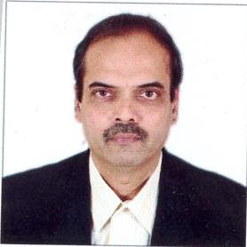
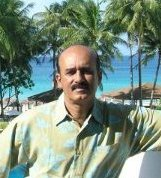

Since 1995, Dr. Mehta runs a dynamic company backed by 2 patents, working on innovative solutions. Recently its Q.R. SMS based proactive customer support solution implemented at KBL was judged by CII as one of the best in the industry.Before this, Dr. Mehta has had enormous experience in the field of consulting. 1977-80, he worked as a senior consultant with PW & Co, and later on worked as a senior consultant with the World Bank from 1982-86. Currently he is working on bringing a one of its kind product in the market, developed by his company. He believes that India in general and IIT Bombay in particular has a great talent pool. There is so much room for innovation and a strong ecosystem can be created which will attract more talent and investment to companies in India.

Graduated from Civil Engg Dept of IIT Bombay, had worked with ACC Ltd and Cement Research Institute of India and has several papers published on cement technology. He has been a serial entrepreneur for the past 25 yrs and had set up a cement factory, an airline, a real estate co, an Investment co, a fishing trawler business, etc. Currently working as social entrepreneur with a few Not For Profit organizations and mentoring alumni of IITB as the Chair, Hyderabad Chapter.